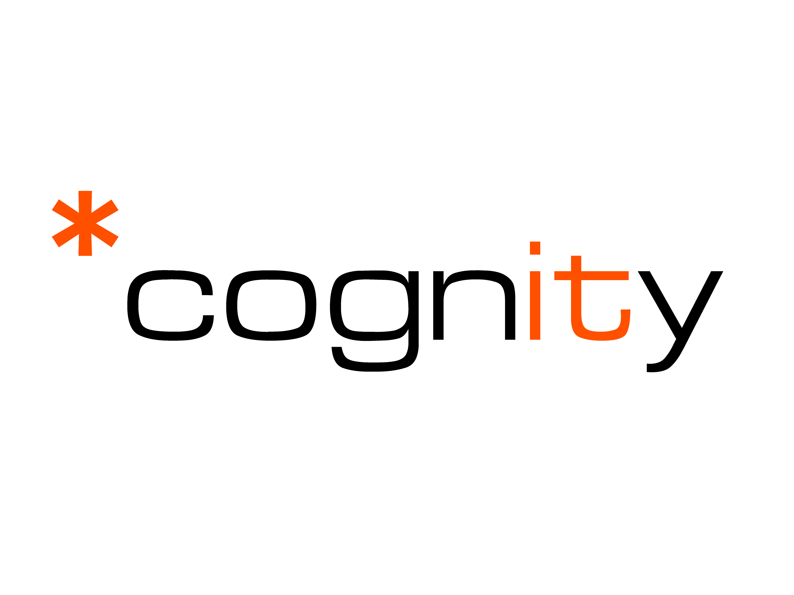

May 2026 – Present

Data & AI Engineer
Cognity S.A.
Data & AI engineering at Cognity S.A., building Hive—a scalable multi-agent platform for coordinating and deploying agentic AI systems. Designing autonomous agents that collaborate, plan, reason, and act across tools, data sources, and environments, with shared memory, messaging, task routing, and governance layers. Developing modular APIs and observability tooling so specialized agents stay aligned, enabling flexible, cloud-native solutions for enterprise automation and complex real-world problem solving.